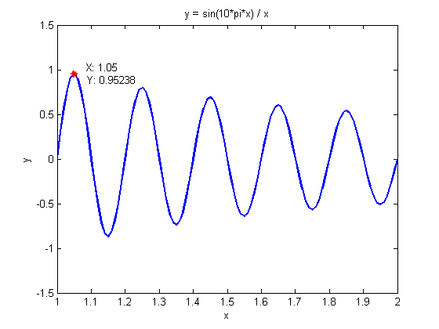
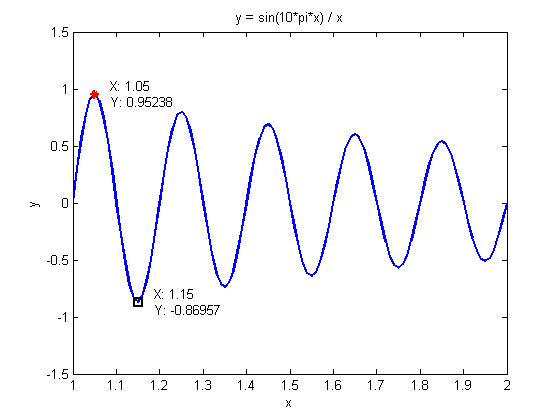
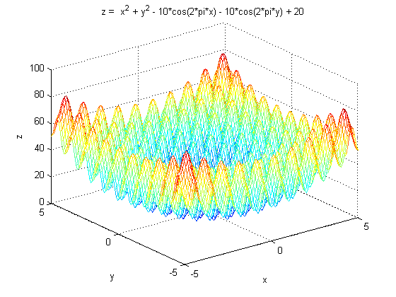
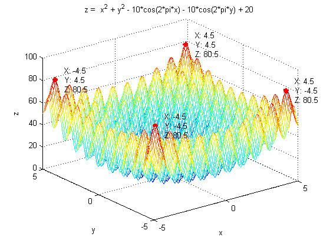

Contents
I. 清空环境变量
clear all
clc
II. 一元函数优化
x = 1:0.01:2; y = sin(10*pi*x) ./ x; figure plot(x,y,'linewidth',1.5) ylim([-1.5, 1.5]) xlabel('x') ylabel('y') title('y = sin(10*pi*x) / x') hold on

1. 标记出最大值点
[maxVal,maxIndex] = max(y); plot(x(maxIndex), maxVal, 'r*','linewidth',2) text(x(maxIndex), maxVal, {[' X: ' num2str(x(maxIndex))];[' Y: ' num2str(maxVal)]}) hold on
2. 标记出最小值点
[minVal,minIndex] = min(y); plot(x(minIndex), minVal, 'ks','linewidth',2) text(x(minIndex), minVal, {[' X: ' num2str(x(minIndex))];[' Y: ' num2str(minVal)]})
III. 二元函数优化
[x,y] = meshgrid(-5:0.1:5,-5:0.1:5); z = x.^2 + y.^2 - 10*cos(2*pi*x) - 10*cos(2*pi*y) + 20; figure mesh(x,y,z) hold on xlabel('x') ylabel('y') zlabel('z') title('z = x^2 + y^2 - 10*cos(2*pi*x) - 10*cos(2*pi*y) + 20')
1. 标记出最大值点
maxVal = max(z(:)); [maxIndexX,maxIndexY] = find(z == maxVal); for i = 1:length(maxIndexX) plot3(x(maxIndexX(i),maxIndexY(i)),y(maxIndexX(i),maxIndexY(i)), maxVal, 'r*','linewidth',2) text(x(maxIndexX(i),maxIndexY(i)),y(maxIndexX(i),maxIndexY(i)), maxVal, {[' X: ' num2str(x(maxIndexX(i),maxIndexY(i)))];[' Y: ' num2str(y(maxIndexX(i),maxIndexY(i)))];[' Z: ' num2str(maxVal)]}) hold on end